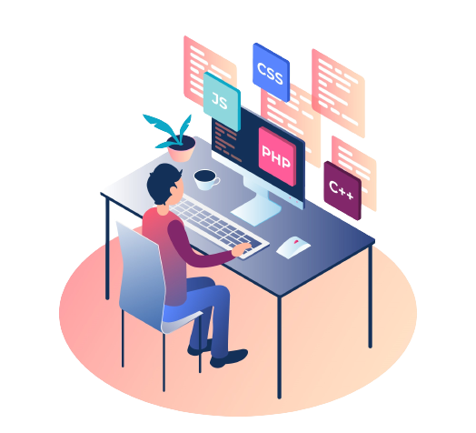

Hello,

As a recent graduate with a Bachelor of Computer Applications (BCA) degree,
I'm passionate about building and developing web and software applications that solve real-world problems.
My technical skills include proficiency in programming languages like
Java ,
C++ ,
C programming ,
HTML ,
CSS , and
PHP-MySQL.
I'm excited to bring my skills and enthusiasm to a role where I can contribute to a dynamic team and continue learning and growing as a team player.
Let's connect and chat about any opportunities or projects you have in mind.